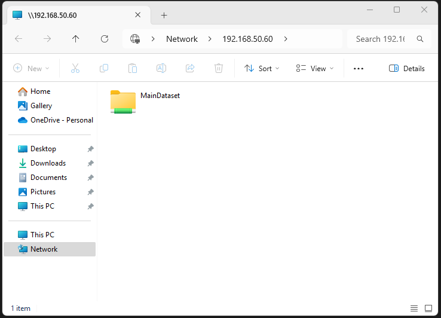

I had heard of FreeNAS and wanted to gain experience with an enterprise grade NAS. I soon learned TrueNAS is the next generation of the FreeNAS project.
There were a few versions to choose from in the TrueNAS ecosystem. After a bit of research I found:
I enjoy the open source movement as it allows me as a curious hobbyist to experiment with professional level solutions, and emulate an enterprise network in my home lab.
During this project I learned that Windows environments use SMB and Linux computers typically prefer the NFS protocol.
I wanted my network share to be available on both Windows and Linux computers. TrueNAS supports multi-protocol access, allowing the same dataset to be accessed with both NFS and SMB simultaneously. So that worked out well. I set up both!
Truenas documentation can be found here.
I installed TrueNAS Scale on a virtual machine in virtualbox to provide network wide accessible storage for my home. The ISO file is available on the TrueNAS website.
Virtualbox settings:
After the OS is installed, there is some setup that needs to take place to use the NAS functionality.
Create a pool in TrueNAS:
Create a dataset in TrueNAS:
Create a user in TrueNAS:
On the TrueNAS server set permissions to allow access.
This is the quick and dirty way of allowing access to the dataset. It works just fine for a personal home network NAS. In a enterprise situation you would customize this for your users instead of allowing everyone the same access. Alternatively, use the mapall user/groups options under the adv options in the NFS Share section.
Share the pool with SMB (Windows) and NFS (Linux)
sudo apt install nfs-common (sudo yum install nfs-utils in the red hat family)
sudo mkdir /mnt/nfs (or wherever you want your mount point)
sudo mount -t nfs 192.168.50.60:/mnt/MainPool/MainDataset /mnt/nfs
The showmount -e command will show the nfs share is available to be mounted. After it is mounted, I test it by creating a file.
Connecting to the SMB share from windows requires a username and password. Someday in the future maybe I’ll experiment with single sign on implementations.
Tada!
Having TrueNAS up and running can be convenient for moving files around the network. This was mainly a learning project and opportunity to expand experience with networking.
Thats it for now!